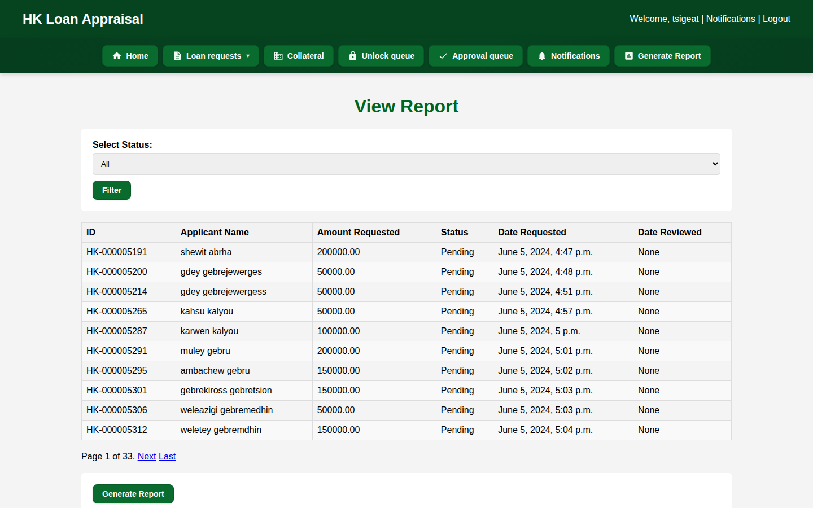
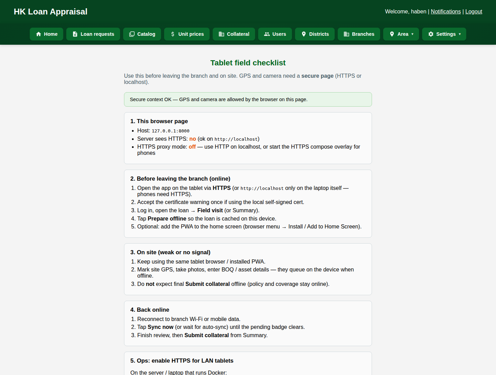

Classification: Confidential
Enclosure: Detailed proposal (PDF)
25 July 2026
Head Office
Africa Avenue (Bole Road)
Addis Ababa, Ethiopia
Dear Sir/Madam,
On behalf of Seqela, we are pleased to submit the enclosed proposal for Oromia Bank’s consideration — a proven AI-powered Credit Intelligence platform for secured MSME and corporate lending that complements OrooDigital and Milkii.
Milkii has demonstrated leadership in fast, collateral-free digital credit. The enclosed solution addresses the complementary need: branch-driven institutional credit where cashflow appraisal, GPS-governed collateral, document authentication, and multi-level committees determine portfolio quality and turnaround time.
The platform digitizes end-to-end secured lending — bilingual (English + Amharic) document authentication, a seven-step cashflow appraisal (MSME and corporate modes), field collateral with offline tablet support, and configurable Branch → District → Head Office committee decisioning — integrating with core banking for customer prefill while leaving disbursement in the Bank’s system of record.
The proposal includes live system screenshots, a DECSI reference case, and a six-month path to a controlled pilot. We respectfully request a 90-minute live demonstration for Credit, Digital Banking, IT, and Risk leadership, and are ready to commence discovery upon your guidance.
Thank you for your time and consideration.
Yours sincerely,
For Seqela
Business Development · Credit Technology Solutions
info@seqela.com · +251 964 790 724 · seqela.com
Attention: Credit Operation Management · Digital Banking · IT · Enterprise Risk & Compliance
Prepared for
Oromia Bank
Baankii Oromiyaa · Head Office, Addis Ababa
AI-powered Credit Intelligence
A complete digital credit factory for secured MSME and corporate lending — cashflow appraisal, bilingual document authentication, GPS-governed collateral, and multi-level committee decisioning — designed to complement OrooDigital and Milkii.
Contents
Preceded by: Cover letter · Formal title page. Page numbers appear in the footer of this PDF.
- 1.Executive summary & the ask
- 2.Strategic fit with Milkii & OrooDigital
- 3.Problems in institutional credit today
- 4.Day in the life — before vs after
- 5.Solution overview & end-to-end lifecycle
- 6.Live system evidence — dashboards & pipeline
- 7.Module A — Intake & document authentication
- 8.Module B — 7-step cashflow appraisal (MSME)
- 9.Module B2 — Corporate appraisal mode
- 10.Module C — Scorecard, gates & analysis assist
- 11.Module D — GPS collateral & evidence packs
- 12.Module E — Committees & approval queues
- 13.Roles, administration & reporting
- 14.Core banking integration & security
- 15.Complete capability catalog
- 16.Problem → solution → benefit matrix
- 17.Reference case — DECSI
- 18.Business case, ROI & cost of inaction
- 19.Implementation roadmap (6 months)
- 20.Engagement model, commercials path & next steps
- 21.Appendix — screenshot index & glossary
Document control
| Item | Detail |
|---|---|
| Audience | Credit, Digital Banking, IT, Risk & Compliance, Executive sponsors |
| Purpose | Secure approval to proceed to discovery + pilot for secured MSME/corporate credit digitization |
| Evidence | Screenshots captured from a live running instance of the AI-powered Credit Intelligence (July 2026) |
| Positioning | Complements Milkii (collateral-free digital); does not replace core banking |
1. Executive Summary & The Ask
The ask: Approve a discovery workshop and fixed-scope pilot to deploy Seqela’s AI-powered Credit Intelligence for Oromia Bank’s secured MSME and corporate lending — extending the Bank’s digital leadership from Milkii into the institutional credit factory.
Oromia Bank has already demonstrated what digital credit can mean for customers through OrooDigital and Milkii. The remaining operational opportunity is the branch-driven process where most secured portfolio risk still lives: document chasing, Excel appraisal variance, informal field evidence, and slow multi-level approvals.
This Hub digitizes that factory end-to-end: bilingual (English + Amharic) document authentication, a seven-step cashflow appraisal for MSME and corporate modes, GPS-governed collateral with lock/audit/evidence packs, and configurable Branch → District → Head Office committees — sitting beside core banking, not replacing it.
What decision-makers get from saying yes
- Credit: One enforced methodology; DSCR, E&S, qualitative, and coverage gates before committee.
- Operations: Live pipeline, role queues, fewer customer callbacks, less rework.
- Risk & Audit: Reconstructable dossiers — documents, scores, GPS evidence, votes, lock history.
- Digital / IT: Docker/PostgreSQL deployment, CBS customer prefill, bank-controlled data residency.
2. Strategic Fit with Milkii & OrooDigital
This proposal is deliberately complementary. It does not ask Oromia Bank to change Milkii. It asks the Bank to extend the same digital ambition into secured and cashflow-based credit — where underwriting depth, collateral, and committees are non-negotiable.
Milkii — existing strength
- Collateral-free digital lending
- Retail / salary / BNPL-style products
- Loyalty and data-driven scoring
- Customer self-serve via app
- Speed and inclusion at scale
AI-powered Credit Intelligence — proposed
- Secured MSME & corporate facilities
- Cashflow / DSCR appraisal methodology
- GPS collateral valuation & evidence packs
- Officer → manager → committee workflow
- Policy gates, E&S, and audit governance
Why now (2026–2028 digital agenda)
- Corporate strategy prioritizes digital expansion and operational excellence beyond brick-and-mortar growth.
- Leadership has publicly emphasized that physical expansion alone is no longer sufficient.
- NBE expectations demand consistent methodology, E&S screening, identity assurance, and decision audit trails.
- Competitors who digitize secured credit first will win MSME customers who refuse to wait weeks.
3. Problems in Institutional Credit Today
When secured lending stays in paper and Excel, the Bank pays in cycle time, uneven risk, and audit cost:
| Pain point | What happens | Cost to Oromia Bank |
|---|---|---|
| Slow multi-level approvals | Files wait on desks; sequential Branch → District → HO handoffs | Lost customers, overtime, weak CX |
| Inconsistent Excel appraisal | Different officers apply different spreadsheet logic | Uneven portfolio quality across branches |
| Incomplete / weak documents | Customers return 2–3 times; weak identity checks | Rework, fraud gaps, delayed analysis |
| Collateral evidence gaps | Photos via WhatsApp; GPS unclear; coverage debated | Committee returns; weak security |
| No single pipeline view | “Where is my loan?” unanswered; late manual reports | Management by guesswork |
| Audit reconstruction pain | Rationale scattered across paper, email, Excel | High audit cost; regulatory findings |
| CBS re-keying | Same customer data typed again into appraisal | Typos, mismatches, delay |
| Rural connectivity | Field work stalls without reliable signal | Incomplete valuations; rescheduling |
The following sections show, with live screenshots, exactly how AI-powered Credit Intelligence removes each of these frictions.
4. Day in the Life — Before vs After
Today — without the Hub
- Customer returns repeatedly with missing documents
- Officer re-keys CBS data into Excel
- Appraisal standards vary by officer
- Field photos informal; location disputed
- File sits waiting for physical sign-offs
- Committee gets incomplete packs
- Audit reconstruction takes days
Typical cycle: 2–6+ weeks
With the AI-powered Credit Intelligence
- Guided checklist + OCR blocks incomplete packs early
- Customer number prefills Sheet 1 from CBS
- One enforced 7-step methodology bank-wide
- GPS-attested visits; evidence pack for voters
- Digital queues with notifications
- Committee sees scorecard, DSCR, E&S, coverage
- Full trail: who did what, when, why
Target cycle: days, not weeks
End-to-end lifecycle (8 stages)
- Intake — Create request; assign officer; customer number; CBS pull
- Documents — Checklist; OCR eng+amh; identity match; verify/reject
- Appraisal — Seven MSME/corporate sheets with policy gates
- Collateral — Building/land/movable; GPS field; offline tablet
- Governance — Submit & lock; unlock requests; engineering QA
- Pre-committee — Operations and finance manager queues
- Committee — Amount-routed multi-level vote; pack; return option
- Booking — Handoff to core banking for disbursement
End-to-end system flow
Application → documents → collateral → appraisal → authorization → disbursement.

5. Solution Overview — Live System Evidence
The screenshots in this proposal were captured from a live running instance of the Hub. They show the actual operator experience Oromia Bank staff would use — not mockups.
5.1 Management dashboard & pipeline visibility
Problem solved: No single view of Total / Approved / Pending / Rejected; late manual reporting.

Bank benefit: Executives and admins manage by exception. Branch hierarchy is first-class (Districts / Branches / Area).
5.2 Centralized loan request pipeline
Search by name/ID/phone, filter by status and date, see assignment and review dates, and act from one table.

5.3 Loan detail — one record for every actor
From a single loan detail page, officers and managers see applicant context, documents, appraisal progress, collateral links, and next actions — ending the “file hunting” culture.

6. Module A — Intake & Document Authentication
Problem solved: Incomplete packs, weak identity assurance, trusted-but-unchecked attachments, repeated branch visits.
6.1 Create loan request (branch manager)

6.2 Application documents with auth workflow
- Configurable required document types (e.g. National ID, TIN, Business licence)
- Pre-upload validation: extension, size, MIME/type, content checks
- OCR in English + Amharic
- Identity matching on name / phone / TIN (optional business name)
- Statuses: Pending → Auto-passed → Needs manual review → Verified / Rejected

Bank benefit: Higher first-time completeness (target 95%+), fewer fraud gaps, cleaner files entering credit analysis.
7. Module B — 7-Step Cashflow Appraisal
Problem solved: Shadow Excel files and inconsistent underwriting across branches. AI-powered Credit Intelligence digitizes cashflow-based MSME methodology (with a corporate mode) as a guided wizard.
| Step | MSME | Corporate | Locks in |
|---|---|---|---|
| 1 | Basic info & loan request | Entity KYC / legal registration | CBS/OCR provenance |
| 2 | Business & character (10 factors) | Governance & character | ≥75% qualitative gate |
| 3 | Cashflow / DSCR / stress | Financial statements & ratios | Capacity vs ask |
| 4 | E&S — 21 items, 5 sections | PASS / ACTIONS / REJECT | |
| 5 | Collateral worksheet | Coverage from field valuation | |
| 6 | Summary, scorecard, recommendation | Approve / Decline / Escalate | |
| 7 | Repayment & amortization | Schedule for booking | |
7.1 Sheet 1 — Basic info with core banking prefill
Customer number lookup fills empty fields. Conflicts are listed for officer Accept (banking wins). Every field shows provenance: Core banking / OCR / Officer.

7.2 Sheet 2 — Business & character (qualitative)
Ten weighted factors (MSME) or governance factors (corporate). Default pass gate: ≥75%. Excel-faithful rating lists keep officer language familiar.

7.3 Sheet 3 — Cashflow, DSCR & stress
Monthly P&L, net cashflow, monthly/annual DSCR, stress test (sales drop / cost increase), max loan capacity, balance-sheet ratios, and a 12-month cashflow grid with “seed from averages.”

7.4 Sheets 4–7 — E&S, collateral, decision, amortization
Sheet 4 — E&S
21 checklist items in 5 sections; risk Low/Medium/High; eligibility PASS / PASS WITH ACTION POINTS / REJECT; sign-off trail.
Sheet 5 — Collateral worksheet
Prefills from field valuation; coverage ratio visible before decision.
Sheet 6 — Summary & decision
4-pillar scorecard, strengths/weaknesses, recommendation, recommended amount (drives committee routing).
Sheet 7 — Amortization
Generate repayment schedule for committee and CBS booking.

Sheet 4 — Environmental & Social
21 checklist items across 5 sections; risk Low/Medium/High; eligibility PASS / PASS WITH ACTION POINTS / REJECT.

7B. Corporate Appraisal Mode — Same Wizard, Different Depth
AI-powered Credit Intelligence is not MSME-only. When the loan product is configured as Corporate, the same seven-step wizard switches labels, KYC depth, qualitative factors, and financial statement fields — so commercial/corporate credit officers work in one platform.
MSME mode (shown earlier)
- Business & character (10 MSME factors)
- Cashflow analysis / monthly grid
- Owner/operator KYC focus
Corporate mode (this section)
- Governance & character (board, audit, covenants)
- Financial statements & cashflow + ratios
- Legal registration, directors & UBO summary
Live demo file: Horizon Agro Industries PLC — Corporate Term Loan — ETB 15,000,000 — Bishoftu Industrial Park, Oromia.

Corporate Sheet 2 — Governance & character
Ten corporate qualitative factors (board/governance, management depth, financial discipline, transparency, related-party, industry position, shareholder stability, audit quality, covenant compliance, reputation) with the same ≥75% pass gate.

Corporate Sheet 3 — Financial statements & cashflow
Corporate annual revenue / operating profit, balance-sheet ratios, DSCR and stress testing — sized for larger facilities.

Corporate decision pack
Sheet 6 recommendation and the committee pack use the same explainable scorecard — Strong band in this demo — so corporate files enter the same approval factory as MSME.

Corporate committee appraisal pack
Read-only pack for Horizon Agro Industries PLC — same explainable scorecard factory as MSME.

8. Module C — Scorecard, Gates & Analysis Assist
Problem solved: Subjective “gut feel” decisions and files that reach committee before policy is met.
8.1 Explainable 4-pillar score (/100)
| Pillar | Weight | What it measures |
|---|---|---|
| Qualitative / character | 25 | Sheet 2 business & character quality |
| Financial / cashflow | 35 | DSCR, stress DSCR, capacity vs ask, ratios |
| Environmental & social | 15 | Risk category & eligibility outcome |
| Collateral coverage | 25 | Coverage vs ask (e.g. ≥1.5× full points) |
Bands: Strong ≥80 · Acceptable ≥60 · Weak ≥40 · Unacceptable <40.
8.2 Hard policy gates (bank-configurable)
- Qualitative <75% → hard block
- E&S REJECT → hard block
- Annual / stressed DSCR <1.0 → hard block
- Bureau defaults → hard block option
- Incomplete sheets 1–6 → cannot finish
- Collateral coverage warning at policy minimum (default 1.0×)
8.3 Analysis Assist — decision support, not auto-approve
Surfaces weak/thin pillars, ask vs max cashflow capacity, bureau flags (thin file, defaults, score/band), corporate registration/audit flags, and hard blocks — so officers fix issues before committee waste.

9. Module D — GPS Collateral & Evidence Packs
Problem solved: WhatsApp photo chaos, unclear site presence, disputed coverage, weak dual control.
9.1 Field visit with offline sync & map verification
- Building BOQ (construction catalog × woreda unit prices), land, other/movable
- GPS site mark with accuracy; EXIF vs live GPS mismatch warnings
- Min photos (e.g. 5 building / 3 land); photo distance policy (default 200m)
- Offline tablet PWA: prepare offline → capture → Sync now
- Lock after submit; supervised unlock; engineering QA pipeline

9.2 Collateral evidence pack for committee & audit
One dossier: coverage vs ask, policy checks, BOQ summary, GPS-tagged photos, map, and recent audit events — with Print/PDF, Export JSON, Export ZIP.

9.3 Policy configuration
Bank risk teams tune min photos, GPS accuracy thresholds, coverage minimums, and distance flags — without code changes.

Bank benefit: Committee-ready proof; dual control; rural-ready offline capture; reconstructable audit.
10. Module E — Approval Committee (live screenshots)
Problem solved: Incomplete packs, unclear routing, slow sequential sign-offs, and opaque returns. This section shows the actual committee workflow from the running system.
10.1 Officer submits to the approval committee
After Sheets 1–7 are finished, the loan officer submits the file to the configured Branch → District → Head Office → Management pathway, with optional notes for voters.

10.2 My approval queue — votes waiting for you
Committee members open a dedicated queue of loans requiring their vote at the current level — no chasing paper files across desks.

10.3 Cast your vote at the current level
Voters see overall status, current level, approval routing/pipeline, Sheet 6 recommendation summary, link to the full appraisal pack, and a vote form (Approve / Decline, amount supported, comments). They can also return to loan officer with required feedback.

10.4 One-screen committee appraisal pack
Before voting, members open a read-only pack covering Sheets 1–7 — scorecard, cashflow/DSCR, E&S, collateral coverage, strengths/weaknesses — Print/PDF ready.

10.5 Amount-routed levels (configurable to Oromia Bank)
| Level | Typical voters | Default votes |
|---|---|---|
| Branch | Loan officer, branch manager, accountant | Min 2 approve / 2 decline |
| District | District manager + peers | 2 / 2 |
| Head office | Ops, finance, credit committee | 2 / 2 |
| Management | CEO / VP / board as configured | 2 / 2 |
Outcomes: Approve · Decline · Return to officer with notes. Operations/finance queues provide pre-committee control when configured.

11. Roles, Administration & Reporting
Sixteen role types out of the box — renamed and scoped to Oromia Bank’s Branch → District/Region → Head Office model.
| Role family | Typical use |
|---|---|
| Loan officer / branch manager | Documents, appraisal, request creation, committee submit |
| Engineer / engineering head | Catalog, unit prices, field visits, engineering QA |
| Operations / finance managers | Pre-committee approval queues |
| District / executives / committee | Escalated reviews and voting |
| Risk / auditor | Review access and audit trails |
| Admin | Users, products, geography, policy |

Branch master data & reporting


Field tablet checklist

12. Core Banking Integration & Security
AI-powered Credit Intelligence is the credit factory. Core banking remains the system of record for accounts and disbursement. There is no Temenos-class rip-and-replace.
Customer lookup
Customer number → party API → name, phone, TIN, address, gender, status (Temenos-style aliases supported).
Smart prefill
Fills empty Sheet 1 fields; conflicts listed for Accept; provenance retained (banking / OCR / officer).
Disbursement handoff
After final approval, booking and fund release stay in CBS.
Controls Risk will respect
- Role-based access on every screen
- Document authentication status trail
- Field-source provenance
- Hard & soft policy gates
- Collateral lock + supervised unlock
- Field audit log (GPS, photos, unlocks, QA)
- Engineering dual control when enabled
- Committee votes with thresholds & return notes
- Evidence pack / dossier export (PDF/JSON/ZIP)
- E&S screening with eligibility decisions
- NBE credit-report / bureau flags on file
- Aligned to NBE credit governance expectations
Technology
Python / Django, PostgreSQL, Docker — on-premises or private cloud with bank-controlled data residency. Optional REST API for future channel integrations. Tesseract OCR (eng+amh). Leaflet maps for collateral.
13. Complete Capability Catalog
| Area | What Oromia Bank gets |
|---|---|
| Intake | Loan requests, officer assignment, customer #, products, status tracking across branches |
| Documents | Configurable types, OCR eng+amh, identity match, integrity checks, verify/reject workflow |
| Appraisal | MSME + corporate 7-step cashflow; qualitative; DSCR; E&S 21 items; scorecard; assist; amortization |
| Collateral | Building BOQ catalog, land, movable; GPS rules; offline PWA; maps; coverage; evidence pack |
| Governance | Lock/unlock, engineering QA, audit log, policy config |
| Approvals | Ops/finance queues; 4-level committee; branch overrides; notifications |
| Admin | Geography, branches, users, categories, bulk CSV imports, analysis policy |
| Tech | Django + PostgreSQL + Docker; CBS customer API; optional REST |
14. Problem → Solution → Benefit Matrix
| Problem | Hub response | Benefit |
|---|---|---|
| Slow multi-level approvals | Digital queues, notifications, amount routing, return-with-notes | Weeks → days |
| Inconsistent Excel appraisal | Mandatory 7-step MSME/corporate wizard + completeness gates | One standard bank-wide |
| Incomplete / fake documents | Eng+Amh OCR, identity match, integrity checks, verify trail | Fewer rejections & fraud gaps |
| Weak collateral evidence | GPS rules, lock, eng QA, evidence pack | Committee-ready proof |
| No pipeline visibility | Role dashboards & status by branch | Manage by exception |
| Audit / NBE exposure | Scorecard, E&S, votes, field audit, dossier export | Audit in hours, not days |
| CBS vs appraisal mismatch | Customer # lookup + conflict-aware prefill | Less re-keying, cleaner KYC |
| Rural connectivity | Offline collateral PWA with later sync | Field work continues |
15. Reference Case — DECSI
Designed around Dedebit Credit and Savings Institution (DECSI) practices — branch → district → HO, construction-based building valuation, and cashflow MSME appraisal.
Expected operational benefits: 50–70% wait-time reduction, weeks-to-days multi-level approvals, 95%+ document completeness.
Reference: Tsige Bayray, Vice Chief of IT, DECSI · +251 914 701 978.
16. Business Case, ROI & Cost of Inaction
Revenue & growth
- Faster turnaround → higher MSME conversion
- More files per officer without proportional headcount
- Competitive edge vs paper/Excel banks
Cost & risk
- Less courier, printing, rework, overtime
- Fewer weak approvals via DSCR/E&S/coverage gates
- Lower audit cost via digital dossiers
Cost of waiting
- Competitors digitize first — MSME customers choose banks that answer in days.
- Portfolio quality drift — Excel variance creates invisible underwriting gaps.
- Staff cost rises with volume — without better control.
- Audit pressure rises as volume grows.
Build vs buy
| Build yourself | Deploy AI-powered Credit Intelligence with Seqela |
|---|---|
| 12–24+ months to parity; rediscover GPS/committee/appraisal edge cases; delayed credit factory | Proven Ethiopian MFI ops; Excel-faithful appraisal + GPS governance built; pilot in ~6 months |
17. Implementation Roadmap (6 Months to Pilot)
| Phase | Timing | Focus |
|---|---|---|
| Discovery | Month 1 | Credit policy workshop, hierarchy mapping, CBS interface design, pilot selection, KPIs |
| Configure & integrate | Months 2–4 | Appraisal modes, collateral catalog, committees, customer API, notifications, OB branding |
| UAT & harden | Month 5 | Credit / Engineering / Risk UAT, security review, parallel-run samples |
| Pilot & train | Month 6 | Pilot go-live, role training, hypercare, national rollout plan |
Configured for Oromia Bank: branding, role hierarchy, loan products, appraisal modes, committee thresholds, collateral unit-price catalog, CBS hooks, policy gates (DSCR, E&S, coverage).
Pilot success metrics (agreed upfront): cycle time, document completeness %, committee return rate, collateral coverage adequacy, audit retrieval time.
18. Engagement Model & Next Steps
Low-risk path to “yes”
- 90-minute live demonstration for Credit, IT, and Risk (walk the screens in this document live)
- 2–3 week discovery and solution blueprint
- Fixed-scope pilot (selected products and branches)
- KPI review → network rollout with SLAs and support
What we need from Oromia Bank
- Executive sponsor (Credit / Digital)
- Sample MSME and corporate policy packs
- CBS customer API contact / sandbox
- Pilot branch and product shortlist
- Success KPIs agreed upfront
Detailed commercial terms (license/subscription, implementation, training, annual support) are issued after discovery confirms scope, integration depth, and hosting model.
Seqela · info@seqela.com · +251 964 790 724 · seqela.com
19. Closing
Seqela is ready to help Oromia Bank extend its digital leadership into disciplined, high-quality institutional credit origination — preserving credit standards while compressing cycle times and strengthening audit readiness.
Milkii showed what digital credit can be for customers.
AI-powered Credit Intelligence shows what digital credit can be for the bank.
The screenshots in this proposal are not aspirational art — they are the working system. A live walkthrough can be arranged immediately for Credit, IT, and Risk leadership.
20. Appendix A — Screenshot Index
| Fig | File | Shows |
|---|---|---|
| 1 | system_flow.png | End-to-end lifecycle diagram |
| 2 | 02-dashboard-home.png | Management dashboard & KPIs |
| 3 | 03-loan-list.png | Loan request pipeline |
| 4 | 04b-officer-loan-detail.png | Officer loan detail |
| 5 | 16-create-loan.png | Create loan request |
| 6 | 05-documents.png | Document auth workflow |
| 7–11 | 06-appraisal-step*.png | MSME appraisal sheets |
| 12–16 | 31-corporate-step*.png / pack | Corporate appraisal mode |
| 17 | 06-appraisal-step7.png | Amortization / Sheet 7 |
| 18 | 10-field-visit.png | GPS field visit + offline |
| 19 | 12-evidence-pack.png | Collateral evidence pack |
| 20 | 13-collateral-policy.png | Collateral policy config |
| 21–25 | committee / ops screens | Submit, queue, vote, pack, ops |
| 26–29 | admin / reports / checklist | Users, branches, reports, field checklist |
Appendix B — Glossary
| Term | Meaning |
|---|---|
| DSCR | Debt Service Coverage Ratio — cashflow available vs debt service |
| E&S | Environmental & Social assessment |
| CBS | Core Banking System |
| BOQ | Bill of Quantities — construction valuation breakdown |
| PWA | Progressive Web App — offline-capable field client |
| NBE | National Bank of Ethiopia |